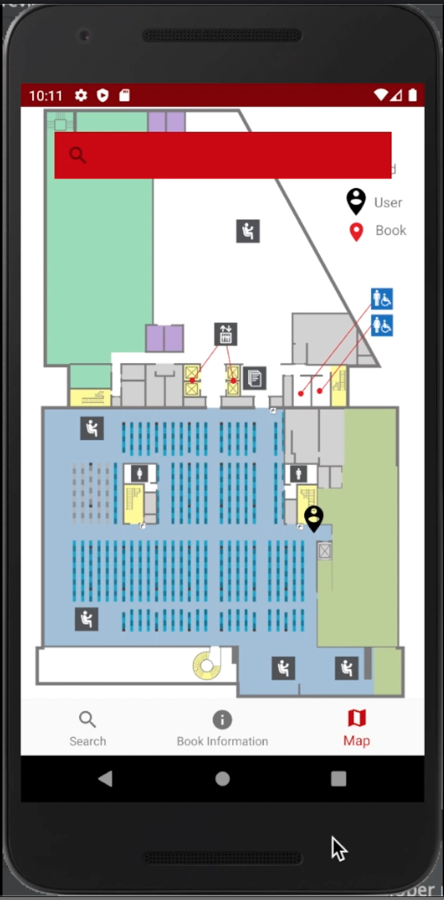
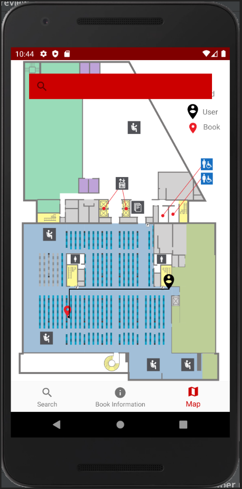

| Opening Screen |
 |
This opening screen will greet users as they open the application, nothing to do here but wait while it loads! |
| Search opening |
 |
Users will see this screen load following the loading, where they can enter the title, author, or call number of the book they’re searching for. |
| Trying to locate yourself |
 |
Users can tab over to the map section of the application in order to locate themselves on our map of the library’s third floor. |
| Let the research begin |
 |
Users will enter the relevant information into the search bar at the top of the application, and recent searches will be displayed below. |
| Making your selection |
 |
Once you’ve narrowed down your results you can select the material you’re searching for, upon doing so the user can tab over to the map with the material selected in order to be shown the route from their location to the item. |
| Finding the item |
 |
Once you’ve tabbed over to the map section of the application, a line will point you from the user’s current location, to the bay in which the book Is located, drastically narrowing down the search. |